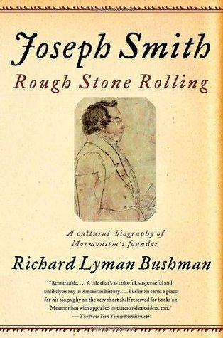

Joseph Smith
⭐️⭐️⭐️
Format: physical ()
An interesting review of Joseph's life. Although not perfectly chronological, the book presented things in a logical fashion. It was interesting to learn more about a man who's life and what he left behind are surrounded by so much controversy. I was disappointed to have the end of the book spoiled by my mother... so I won't do the same to anybody else.
- Previously: The Shadow of the Wind
- Next: Treasure Island